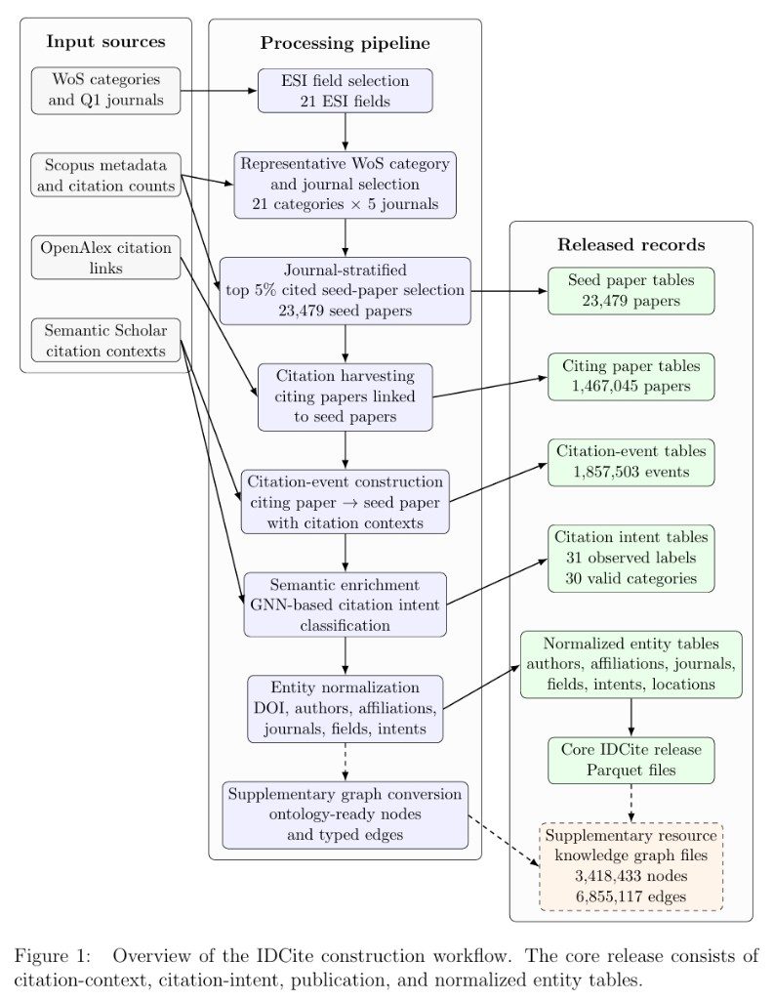

IDCite
A Large-Scale Multidisciplinary Citation Intent Dataset for Scholarly Knowledge Discovery
IDCite is a large-scale resource for citation-level analysis across multiple scientific disciplines. Seed publications were selected through a journal-stratified procedure covering 21 Essential Science Indicators (ESI) fields, 21 representative Web of Science categories, and 105 Q1 journals. The release contains 1,857,503 citation records linking 1,467,045 citing publications to 23,479 seed papers, together with citation contexts, intent labels, publication metadata, normalized entities, and an ontology-ready knowledge graph of 3,418,433 nodes and 6,855,117 edges.
Dataset Summary
A few headline numbers describe the scale of IDCite.
Construction pipeline
From multidisciplinary seed selection to normalized, ready-to-use citation-event tables.

- 1
Journal-stratified sampling
21 ESI fields → 21 representative WoS categories → 5 Q1 journals each (105 journals).
- 2
Seed-paper selection
Top 5% most-cited papers retained independently within each journal → 23,479 seed papers.
- 3
Citation harvesting
OpenAlex citation links connect 1.47M citing papers to the seed corpus.
- 4
Citation-event construction
Each citing → seed link becomes an event carrying its citation context.
- 5
Semantic enrichment
SynIntent (GNN-based) assigns citation intents as weak semantic supervision.
- 6
Entity normalization
DOIs, authors, affiliations, journals, fields, and intents are normalized.
Citation intent distribution
Seven canonical intents after decomposing composite labels. The distribution preserves the natural imbalance of real scholarly citations — background dominates.
| Canonical intent | Count | % |
|---|---|---|
| background | 1,660,899 | 88.20 |
| uses | 131,827 | 7.00 |
| similarities | 45,753 | 2.43 |
| motivation | 21,555 | 1.14 |
| differences | 15,617 | 0.83 |
| future work | 4,654 | 0.25 |
| extends | 2,813 | 0.15 |
Intent labels are model-generated (SynIntent, Strict Acc. 0.67 / Weak Acc. 0.80 on MultiCite) and released as weak supervision — not manually curated gold labels.
Seed papers across 21 ESI fields
Journal-stratified sampling preserves disciplinary heterogeneity; field counts are not resampled to be balanced.
ESI field → representative WoS category (5 Q1 journals each)
| ESI field | WoS category | Journals |
|---|
Released files
Apache Parquet tables covering citation events, publication metadata, and normalized scholarly entities.
| File | Rows | Cols | Description |
|---|
Access & citation
Zenodo · Version 3
Official archived release of the Parquet dataset files.
10.5281/zenodo.20796923 →Hugging Face
Processed dataset mirror for direct loading with Arrow-compatible tools.
datasets/Daniel0315/IDCite →Construction pipeline
Python workflows for collection, harvesting, annotation, and validation.
SeohyunNam/MDCite →CitationHub
Interactive dashboard and visualization platform powered by IDCite.
citation-hub-website.vercel.app →Cite this dataset
@dataset{idcite2026,
title = {IDCite: A Large-Scale Multidisciplinary Citation Intent Dataset for Scholarly Knowledge Discovery},
author = {Nam, Seohyun},
year = {2026},
publisher = {Zenodo},
doi = {10.5281/zenodo.20796923}
}
Release lineage
- Concept DOI (all versions) — 10.5281/zenodo.18410049
- v1 · MDCite — 10.5281/zenodo.18410050
- v2 · MDContextCite / EdgeCite — 10.5281/zenodo.18536895
- v3 · IDCite — 10.5281/zenodo.20796923
Project & Dataset Documentation
The complete Version 3 reference — dataset design, release lineage, data sources, construction pipeline, schema definitions, sampling strategy, intent annotation, normalized entities, reproducibility, and responsible-use guidance.
Open documentation (PDF) →